第 10 章 维多利亚时代的多雾群岛
下面是英国数学家乔治·皮科克（1791—1858）在 1830 年出版的《论代数》中写的一段话：
（算术）只被当作一门推测的科学，代数法则和运算也适用于它，但是它们不受算术的限制和制约。
10 年后，皮科克的学生、年轻的苏格兰数学家邓肯·格雷戈里（1813—1844，当时 27 岁）写了这样一段话：
普通代数中有很多定理，虽然它们从表面上看只适用于代表数的符号，但其实它们有更广泛的应用。这些定理只取决于这些符号需要满足的结合律，因此无论它们的性质如何，对于满足结合律的所有符号，这些定理都成立。
另一位英国人德·摩根在他的《三角学与双代数》（1849 年）中写下了下面这段话：
假设符号“ ”“
”“ ”“+”存在唯一一种结合关系，即“
”“+”存在唯一一种结合关系，即“
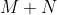
”与“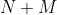
”一样。如何使这种符号计算变得有意义？下面是几种方法。1.“”和“”可以是量级，“+”是把第二个数加到第一个数上的加法符号。2.“”和“”可以是数，而“+”是第二个数乘以第一个数的符号。3.“”和“”可以是直线，“+”代表作出以第一项为底、第二项为高的矩形。4.“”和“”可以是人，“+”代表前者是后者的兄弟的断言。5.“”和“”可以是国家，“+”表示后者与前者发生过战争。
显然，代数在 19 世纪的第二个 25 年里脱离了数的世界。是什么推动了这个过程呢？为什么这些话都出自不列颠群岛的数学家呢？
※※※
进入 18 世纪以后，英国的数学发展越发落后于欧洲大陆。艾萨克·牛顿爵士要对此承担部分责任；或者更确切地说，英国人的自我意识膨胀导致了这个结果，因为对大部分英国人来说，牛顿爵士是一位民族英雄。借用牛顿的说法，这种自我意识的膨胀产生了一种大小相等、方向相反的反作用力：欧洲大陆各国也有与牛顿媲美的文化英雄，笛卡儿就是法国人的英雄。前面提到的帕特丽夏·法拉 1 的书记录了 1760 年前后的一首充满爱国思想的英国祝酒歌：
1参考第 6 章第 2 个注释。
牛顿爵士打破了笛卡儿的原子论，
莱布尼茨偷走了我们的同胞的流数；
牛顿发现了引力，揭示了真空，
尽管他对实空 2 抱有成见。
万有引力在炫耀，
让我举杯夸耀，
比所有人都强大的——牛顿爵士。
2“Plenum”（实空）是笛卡儿提出的，指完全充满着某种物质的空间，与“真空”相反。——译者注
事实上，德国有两名反牛顿的偶像：除了莱布尼茨还有歌德，歌德是牛顿光学理论的尖锐批评者。法拉的书中说：“位于魏玛的歌德的家里有反牛顿七原色理论的装饰。”3
3德·摩根在他的著作《悖论汇编》中评论一首与此不同但主题类似的祝酒歌时说：“在 1800 年，赞美牛顿而不抨击笛卡儿，会被认为是不平衡的。”
这一切对英国数学都是很不幸的，因为牛顿设计的微积分中的运算符号远远不如莱布尼茨的符号合理，而且莱布尼茨的符号在整个欧洲大陆都通用。爱国的英国人坚持使用牛顿的“点”记号，而不接受莱布尼茨的 d 记号。比如，英国人的
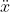
，在欧洲大陆的写法是
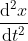
英国人的记法使得英国的微积分孤立且阻滞不前。4 对欧洲大陆的数学家来说，这种记法使得英国的论文读起来有点儿烦人，而且它忽略了一个事实，即算子
4英国人珍爱牛顿的记法，至少在教材中是这样的。20 世纪 60 年代初，我在一所不错的英国学校中学习了使用牛顿点记号的物理和应用数学。
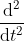
作用在  （此处是
（此处是  的函数）上：这个算子可以被单独拿出来作为一个数学对象。人们已经意识到这个事实的重要性。
的函数）上：这个算子可以被单独拿出来作为一个数学对象。人们已经意识到这个事实的重要性。
不过，即使考虑到牛顿的原因，人们也不可避免会产生这样一种印象：顽固的民族自豪感和偏狭的岛国心态阻碍了当时英国数学的发展。例如，复数很早之前就在欧洲数学中“扎根”了。相比之下，在英国，甚至连负数都受到一些职业数学家们的蔑视，下面这段话引自威廉·弗伦德（1757—1841）的著作《代数原理》（1796 年）的序言，它就是一个佐证：
（一个数）可以从一个比它大的数中减去，但试图从一个比这个数小的数中减去则是荒谬的。然而，那些谈论比 0 更小的数、负负相乘得正、虚数的代数学家们正在做这种尝试。这是一些术语，与常识相悖，但是一旦它被接受，就如其他很多虚构的事情一样，它会在那些喜欢轻信别人、讨厌严肃思考的人中得到疯狂的支持。
弗伦德不是一个独行的怪人。他曾经是 1780 年英国剑桥大学基督学院年度数学考试的第二名。他是英国最早的一批精算师之一，后来他与我在前面提到过的德·摩根成为朋友，并把他的一个女儿嫁给了德·摩根。
到了 19 世纪初期，年轻一代的英国数学家们已经开始对现状感到不满。与拿破仑的长期战争对英国人产生了双重影响，一方面迫使英国人比以往更关注欧洲大陆的思想，另一方面使得这个海外岛国（根据《联合法案》，自 1801 年起只有一个联合王国）的数学家们认识到法国的数学多么优秀。
1813 年，牛顿曾经求学的剑桥大学三一学院的三位年轻学者采取了行动，建立了所谓的分析学会。这三位学者都出生于 1791 到 1792 年，分别是约翰·赫舍尔（1792—1871，他的父亲威廉·赫舍尔是发现天王星的天文学家）、査尔斯·巴贝奇（1791— 1871，他后来因一种机械计算机——“分析机”而闻名），以及前面提到的乔治·皮科克。他们的学会的主要宗旨是改革微积分教学，正如巴贝奇说的：“以纯 d 主义信念对抗大学的点（dot）时代。”
分析学会似乎没有持续很长时间，三位创始人都没有成为一流的数学家，但是这个学会的精神被皮科克这位积极的理想主义改革者以他那个时代特有的风格发扬光大。皮科克毕业后在三一学院担任讲师，在 1817 年成为一名数学考官。他被任命为考官后做的第一件事就是改革微积分教学，从牛顿的“点”时代转变成莱布尼茨的 d 主义。
皮科克后来成为一名正教授，参与了几个学术团体的创建，尤其为伦敦天文学会、剑桥哲学学会和英国科学促进协会的创建做出了贡献。所有这些新团体都对任何有才能、有成就的人开放，打破了学术团体只是绅士俱乐部并且拒绝接纳那些自学成才的工人和“粗鲁工匠”的旧有观念。工业革命早期，持技术统治论的中下层阶级展示了他们的力量。皮科克最后以英格兰东部伊利大教堂的座堂主任牧师的身份愉快地走完了自己的一生。
这种改革精神是这个时期英国数学发展的背景，我们可以在下一代英国数学家，尤其是代数学家身上看到这种精神下产生的结果。我在前面已经介绍了出生于 1805 年的哈密顿的工作，紧接着，德·摩根（出生于 1806 年）、西尔维斯特（出生于 1814 年）、布尔（出生于 1815 年）和凯莱（出生于 1821 年）登上舞台。这些人至少在代数学领域挽救了英国数学的名声。我们要把群论、矩阵理论、不变量理论以及现代的数学基础理论的全部或一部分归功于他们。5
5我在前文中引用过邓肯·格雷戈里的话，这位苏格兰人在说出那番话时才开始致力于数学，在不到四年后就去世了。不过，他对布尔产生了很大的影响。事实上，我提到的邓肯的引言并非取自《爱丁堡皇家学会学报》原版，而是取自论文《论分析中的一般方法》，这篇论文是布尔于 1844 年提交给皇家学会的。
※※※
德·摩根是上文提到的四位数学家中数学影响力最小的一位数学家，但是，他在很多方面却是最令人感兴趣的一个人。他在我的心中占据着特殊的位置，因为他是我的母校——“高尔街上的无神论学院”——伦敦大学学院的第一位数学教授。
牛津大学和剑桥大学这两所历史悠久的英国名校在进入 19 世纪以后仍然受到其早期历史遗留下来的宗教、社会和政治等方面的制约。例如，这两所大学都不接收女学生，并且都要求对硕士和会士进行一次宗教测试（实际上，这也是当时牛津大学的毕业要求之一），主要内容是让他们宣誓对英格兰教会及其教义忠诚。渐渐地，这些限制 6 在很多人看来十分荒谬，拿破仑战争一结束，伴随着改革精神开始流行，在英国的知识分子阶层中，建立一所更先进的高等教育机构的情绪开始高涨。这种情绪在建立伦敦大学学院的过程中得到了充分的体现，1828 年，这所学校开始招收第一批学生。
6更不用说在对抗拿破仑的战争中以备不时之需而征收的所得税了。战争结束时，改革家亨利·布鲁厄姆说服国会不必再征税，所得税政策在 1816 年被废除。这让政府感到恐慌，但人民普遍对此感到高兴。
这所新大学是英格兰第一所不限制性别、宗教信仰和政治观点的高等院校 7。伦敦很快就建立了更多这样的学院。到了 21 世纪初，今天的伦敦大学和其他古老的大学一样，是一所综合性大学，而最初建在高尔街上的学院就是伦敦大学学院。
7当我第一次来到这所学校的大门前时，有人告诉我：“这个地方（伦敦大学）是犹太人和威尔士人创建的。”事实上，詹姆斯·穆勒（1773—1836）、托马斯·坎贝尔（1777—1844）和亨利·布鲁厄姆（1742—1810）这些支持建立伦敦大学的人都是苏格兰人。然而，建立这所大学的资金来自这个城市的商人阶层，他们大部分是卫理公会教徒和犹太人。
这所新大学的建立对德·摩根来说正是时候。他在剑桥大学三一学院取得了学士学位。皮科克曾是德·摩根的老师，乔治·艾里（1801—1892）也是他的老师。艾里后来成为皇家天文学家，有一个数学函数以他的名字命名——艾里函数 8。在 1826 年的毕业数学考试中取得第四名之后，德·摩根打算攻读硕士学位。然而，攻读硕士需要进行宗教测试。德·摩根似乎天生就有（为他写传记的作家杰文斯形容是“强烈的”）宗教倾向，但是他的信仰是个人的，他没有加入任何有组织的教会，当然也没有加入英格兰教会。
8其实这是两个关系密切的函数。它们是以下常微分方程的解，会出现在很多物理学分支中：
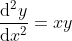
德·摩根向来是一个有很强的原则性的人，他拒绝参加这样的测试，回到伦敦的家中，就像 20 年后的凯莱一样，他放弃深造，想成为一名律师。然而，就在他刚刚在林肯律师学院注册后，伦敦大学学院这所新大学成立了，他受邀担任数学教授，于是他接受了这份工作。22 岁时，他在高尔街开始了他的第一堂课——“论数学研究”。此后，德·摩根一直担任教授，直到 1866 年因一个原则性问题辞职。
德·摩根是一个勤勉好学、和蔼可亲的人，他的传记给读者留下了深刻的印象，他就是那种人们愿意邀请共进晩宴的人。他还是一位伟大的科学普及者，热心地向很多社团和小型杂志投稿，满足乔治王时代晚期和维多利亚时代初期不断壮大的技术和商业阶层人士的需求（为他写传记的作家说：“他写的各种篇幅的文章不少于 850 篇。”）。他是一位藏书家和优秀的业余长笛演奏家。他的妻子在他们位于切尔西的切尼步道 30 号的家中组织了一个法国古典风格的知识分子沙龙。他的女儿是童话作家，她写的那个令人毛骨悚然的故事《头发树》是我小时候的噩梦。
德·摩根善于解谜，对语言和数学上的奇事有着强烈的热爱，他把其中一些谜题收集在他的畅销书《悖论汇编》中（1872 年，那本书在他去世后由他的遗孀出版）。当他发现他在  那一年正好 岁（只有极少数人能幸运地赶上这个巧合）9，以及自己的名字（Augustus De Morgan）与“O Gus!Tug a mean surd!”（哦，古斯！抓住一个均值根式！）10 是相同字母的不同组合时非常高兴。
那一年正好 岁（只有极少数人能幸运地赶上这个巧合）9，以及自己的名字（Augustus De Morgan）与“O Gus!Tug a mean surd!”（哦，古斯！抓住一个均值根式！）10 是相同字母的不同组合时非常高兴。
9你只有出生在
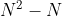
年才能如此幸运。德·摩根出生于 1806 年（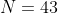
）。接下来的幸运出生年份是 1892 年、1980 年和 2070 年。
10古斯是奥古斯塔斯（Augustus）的简称。——译者注
※※※
德·摩根在代数学历史上的重要贡献在于，他尝试全面改革逻辑学并改进其记法。自亚里士多德开创逻辑学以来，这门学问几乎没有什么发展。直到德·摩根所在的时代，逻辑学的讲授依然局限于这样的观点：一共有四种基本类型的命题，其中有两种肯定命题和两种否定命题。
它们是全称肯定命题（所有 X 都是 Y），
特称肯定命题（存在 X 是 Y），
全称否定命题（所有 X 都不是 Y），
特称否定命题（存在 X 不是 Y）。
三个这样的命题可以被组成一组，人们称之为三段论，由两个前提得出一个结论：
人皆有一死，
苏格拉底是人，
-----------------
苏格拉底会死。
在德·摩根的时代，爱丁堡有一位逻辑学和形而上学教授威廉·哈密顿（1788—1856），他与我在第 8 章介绍的威廉·哈密顿不是同一个人，然而这两个人经常被弄混 11。在 1833 年的逻辑课上，这位哈密顿建议改进亚里士多德的架构。他认为，亚里士多德只量化命题主语（“所有 X”“存在 X”）而不量化其中的谓词（“是 Y”“不是 Y”）的做法是错误的。他提出的改进方法是量化谓词。
11例如杰文斯，参见 1911 年《大英百科全书》中关于德·摩根的文章。
德·摩根接受了这个观点，并照此推行，最终出版了一本名为《形式逻辑，或推理演算，必要性和可能性》的著作（1847 年）。在那本书出版后的几年里，他又相继发表了四篇关于此主题的论著，并打算把这些著作综合起来，建立一个围绕改进记法和量化谓词的巨大的新逻辑体系。最初提出这个想法的威廉·哈密顿没有受到什么触动，他认为德·摩根的体系“有很多可怕的倒刺”。如今看来，这只是一件历史趣闻，因为德·摩根只改进了传统的书写逻辑公式的方式。逻辑学进步真正需要的是完整的现代代数字母符号体系，这是由乔治·布尔完成的。
※※※
布尔是 19 世纪初英国的“新人类”，他出身卑微，自学成才，没有得到他人的资助，他仅靠自己的能力和努力来成长。他是小镇上的鞋匠和女仆的儿子，他只接受了父母负担得起的教育，之后只能刻苦自学。14 岁时，他开始翻译希腊诗歌。然而，16 岁时，他的父亲失业，布尔接受了一份校长的工作来养家。他当了 18 年校长，大部分时间在经营自己的学校。早在 19 岁那年，他就创办了第一所自己的学校。
与此同时，他大约从 17 岁起开始认真学习数学，并且很快就学会了微积分。大约在 25 岁时，他在邓肯·格雷戈里（邓肯是《剑桥数学期刊》的第一位编辑，我在本章开头引用了他的话）的鼓励下开始定期在《剑桥数学期刊》上发表文章。1842 年，布尔开始与德·摩根通信，德·摩根帮助他在英国皇家学会发表了一篇关于微分方程的论文。
1846 年 12，当英国政府宣布扩大爱尔兰的高等教育规模时，德·摩根、凯莱和威廉·汤姆森（后来成为开尔文勋爵，热力学温度单位就是以他的名字命名的）等赞赏布尔的人动员他争取一所新大学的教授职位。1849 年，布尔不负众望，成为科克女王学院的数学教授。他在这个职位上工作了 15 年，直到 1864 年 11 月的一天，他冒着倾盆大雨步行两英里从家走到学校，穿着湿衣服讲课，结果感冒了。他的妻子认为治疗疾病的方法是“以毒攻毒”，所以她让布尔躺在床上，然后向他身上泼了好几桶冰水。正如数学家们常说的那样，结果显而易见。
12这一年就是爱尔兰大饥荒（俗称“马铃薯饥荒”）刚开始的时候。我认为“敏感”和“明智”这两个词从未如实地用在英国政府对爱尔兰的所有政策上。然而，必须指出的是，在建立这些新学院时，这些英国人至少在努力。在爱尔兰，人们大声疾呼，要求无教派大学向任何人开放，这种呼声甚至比英国还要多。新的学院就是对这种呼声的回应。
我没有找到任何对布尔不友好的言论。即使忽略那些赞扬他的传记作家的溢美之词，他似乎仍是一位近乎完美的好人。他娶了乔治·埃佛勒斯爵士（1790—1866）的侄女，生活幸福。他们育有 5 个女儿，他们的第三个女儿艾丽西亚·布尔·斯托特（1860— 1940）自学成为数学家，在高维几何领域取得了重要成果，她活到了 80 岁，在第二次世界大战期间死于英格兰 13。
13在 20 世纪 30 年代，当时已经 70 多岁高龄的艾丽西亚与伟大的几何学家考克斯特一起工作。考克斯特在他的著作《正多面体》中对她的介绍颇多：“当她四岁时，她的父亲就去世了，所以她的数学才华纯粹是遗传而来的……她没有机会接受普通意义上的教育，布尔夫人与（神秘主义者、外科医生、古怪的社会激进分子）詹姆斯·辛顿（1822—1875）是朋友，这种关系把许多社会改革者和奇人源源不断地吸引到了这个家庭中。在那几年里，辛顿的儿子霍华德带来了很多木制的小立方体，他让布尔的最小的三个女儿记住他给这些小立方体随意起的拉丁名字，并把它们堆成各种形状。这激发了当时大约 18 岁的艾丽西亚对四维几何极其深入的理解……”顺便提一下，霍华德的全名是查尔斯·霍华德·辛顿（1853—1907），他提出了一些关于第四维的推测，这也许为艾勃特创作《平面国》带来了灵感。
布尔的伟大成就是逻辑的代数化——他使用各种代数符号，把逻辑学提升为数学的一个分支。为了说明布尔的方法，下面给出我在前面介绍过的三段论的代数版本。
我们把注意力集中在由地球上所有生物组成的集合上。这就是我们的“论域”，不过布尔没有使用这个术语，这个术语是约翰·韦恩（1834—1923）在 1881 年创造的。我们用 1 表示这个论域，用 0 表示空集——空集不包含任何元素。现在考虑所有会死的生物，用 表示这个集合（有可能  ，这不影响讨论）。类似地，用
，这不影响讨论）。类似地，用  表示所有人的集合，用
表示所有人的集合，用  表示只有一个元素（即苏格拉底）的集合。
表示只有一个元素（即苏格拉底）的集合。
除此之外，还有两个记号。第一，如果  是某些事物的集合，且
是某些事物的集合，且  也是某些事物的集合，那么用乘法符号表示它们的交集：
也是某些事物的集合，那么用乘法符号表示它们的交集：
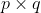
表示既在 中又在 中的那些事物。（也可能不存在这样的事物，那么 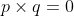
。）第二，用减法符号表示去掉这个交集：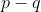
表示所有在 中但不在 中的事物。
现在我们就可以将三段论代数化了。“人皆有一死”这句话可以重新表述为“是人且是不死生物的集合是空集”。其代数表示就是
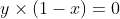
。运用代数法则去括号后，这个表达式变成 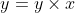
（翻译回文字就是“所有人的集合正好就是会死的人的集合”）。
类似地，“苏格拉底是人”可以被代数化为
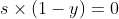
，等价于 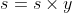
（“仅由苏格拉底组成的集合等于其成员只有一个且同时是苏格拉底和人的集合。”如果苏格拉底不是人，上面的等式就不成立，右边的集合就是空集）。
将 代入等式 ，得到
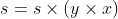
。根据代数的一般法则，我可以这样重新放置括号的位置：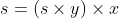
。而我已经证明 ，因此 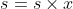
，这等价于 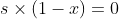
。翻译回文字就是“是苏格拉底且不会死的生物的集合是空集”。所以苏格拉底会死。
伯特兰·罗素（1872—1970）发表于 1901 年的一篇论文中有一段被广为引用的评述：“纯数学是布尔在一部被他称为《思维规律》（1854 年出版）的著作中发现的。”罗素在这个评述之后接着说道：“如果他的著作真的包含思维规律，那么奇怪的是之前没有一个人使用这种思维方式……”罗素还根据他自己对数学和逻辑之间的关系的认识得出这样的观点：数学就是逻辑。这种信念如今已不再被广泛认可。
大多数现代数学家对罗素的评述的回应是，布尔事实上发明的不是纯数学，而是应用数学的一个新分支——代数在逻辑学中的应用。在布尔的思想出现之后，随后的历史证实了这一点。经过一代又一代逻辑学家的努力，布尔的集合代数在 19 世纪末已经完全演变成逻辑演算，这些逻辑学家有休·麦科尔（1837—1909）、查尔斯·桑德斯·皮尔斯（1839—1914，他是第 8 章中提到的本杰明·皮尔斯的儿子）、朱塞佩·皮亚诺（1858—1932）和戈特洛布·弗雷格（1848—1925）。接着，这种逻辑演算成为 20 世纪研究的潮流，在数学系的课程表上被写成“数学基础”，这门课程使用数学工具来研究数学自身的性质。
由于人们通常不把这种潮流看作近世代数的一部分，因此我就不再深入讲述了。然而，一部讲述代数学的历史会因为没有介绍布尔代数而变得不完整。布尔功勋卓著，正是他把代数与逻辑结合在一起。
※※※
有一批伟大的英国数学家在 19 世纪前 25 年间相继出生，凯莱就是其中一员，我在前文中介绍矩阵理论时曾经提到过他。然而，那并非凯莱对代数学的唯一贡献。他有资格被称为现代抽象群论（我将在第 11 章介绍这一内容）的创始人。因此，在回到对欧洲大陆的数学发展的介绍之前，在这里叙述凯莱在这方面的工作既方便又公平。
近世代数的意义中的英语单词“群”（group）第一次出现在 1854 年凯莱发表的两篇论文中，这两篇论文的标题相同，都是《关于符号方程 的群论》。我将在第 11 章详细介绍早期群论的发展。在这里，我只想给出凯莱在 1854 年的表述中的一个非常有用的特性，以此作为对群论的简介。
回顾我们在第 9 章中讨论过的行列式，在那里我特别研究了 3 个对象的置换，列出了这些置换的所有 6 种可能情形。为了解释凯莱的研究进展，我需要讲述与置换有关的更多内容，并介绍一种书写它们的好方法。曾经有三四种不同的表示置换的方法一度受到人们的青睐，但是现代代数学家似乎已经适应了循环记法，这也是我今后将要使用的记法。
什么是循环记法呢？考虑分别标有数字 1、2 和 3 的 3 个盒子里的 3 个物体——苹果、书和梳子。把下面的状态看成一个“初始状态”：苹果在盒子 1 里，书在盒子 2 里，梳子在盒子 3 里。定义“恒等置换”为不做任何改变的置换。如果把恒等置换应用于初始状态，那么苹果仍然在盒子 1 里，书仍在盒子 2 里，梳子仍在盒子 3 里。
注意，这一点经常令初学者感到困惑：无论盒子里的东西是什么，置换的作用对象都是盒子里的东西。循环记法 (12) 表示如下置换：把第一个盒子里的东西和第二个盒子里的东西交换。这可以被理解为：[ 盒子 ]1[ 里的东西 ] 被放到 [ 盒子 ]2，[ 盒子 ]2[ 里的东西 ] 被放到 [ 盒子 ]1。数学家在看到这个循环记法时实际想的是 1 到 2，2 到 1。注意其中的循环效果，记法的括号中的最后一个数字被置换为第一个数字。这就是这种记法叫作循环记法的原因。
假设我们把这个置换作用于初始状态，那么，苹果将在盒子 2 里，书将在盒子 1 里。如果我们再应用没有任何改变的恒等置换，那么苹果仍在盒子 2 里，书仍在盒子 1 里，当然，梳子仍在盒子 3 里。我们使用乘法符号表示置换的合成：
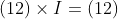
。
假设我们对初始状态做了 (12) 置换，然后重复一次。在第一次置换之后，苹果到了盒子 2 里，书到了盒子 1 里；在第二次置换之后，书到了盒子 2 里，苹果到了盒子 1 里，又回到了初始状态。换句话说，
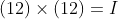
。
这样处理，我们就可以构建一个置换三个元素的完整的“乘法表”。我们来看循环记法 (132) 表示的更复杂的置换，其意义如下：[ 盒子 ]1[ 里的东西 ] 被放到 [ 盒子 ]3，[ 盒子 ]3[ 里的东西 ] 被放到 [ 盒子 ]2，[ 盒子 ]2[ 里的东西 ] 被放到 [ 盒子 ]1。那么，对初始状态应用这个置换操作，结果就是苹果被放到盒子 3 里，梳子被放到盒子 2 里，而书被放到盒子 1 里（1 到 3，3 到 2，2 到 1）。如果我们接着应用置换 (12)，那么梳子在盒子 1 里，书在盒子 2 里，苹果在盒子 3 里，结果就和直接对初始状态应用置换 (13) 的效果一样，用代数的方式表示就是 (132)×(12)=(13)。
我在前面说过，我们可以用这种方式构建一个完整的“乘法表”，如图 10-1 所示。首先应用最左端一列的置换，再应用最上方一行的置换，那么作用的结果就在第一个置换所在行和后一个置换所在列的交叉位置。
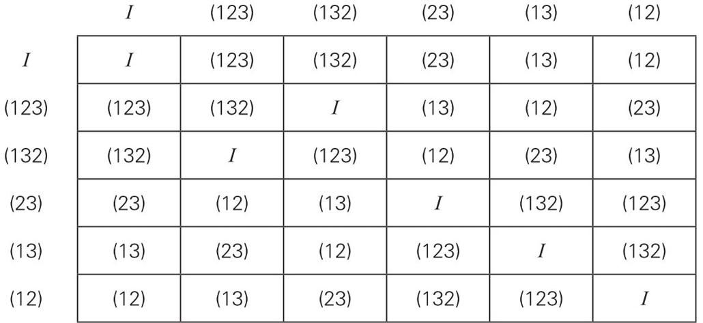
图 10-1 群 的凯莱表
这样的表被称为凯莱表。事实上，凯莱发表于 1854 年的第一篇论文的第 6 页中就有一个与之非常相似的表。注意，置换的合成是非交换的，这一点可以从这个表关于主对角线（从左上角到右下角的对角线）不对称看出来。
这 6 种对 3 个对象的可能的置换，再加上该“乘法表”给出的合成法则，就是一个群的例子。这个特别的群非常重要，它有自己的符号： 。
。
不是唯一的包含 6 个元素的群，还有另一个群。考虑六次单位根，仍用  表示单位立方根，则六次单位根是 1、
表示单位立方根，则六次单位根是 1、 、、-1、
、、-1、 和
和  （见“数学基础知识：单位根”）。这 6 个数的“乘法表”如下（图 10-2）。
（见“数学基础知识：单位根”）。这 6 个数的“乘法表”如下（图 10-2）。
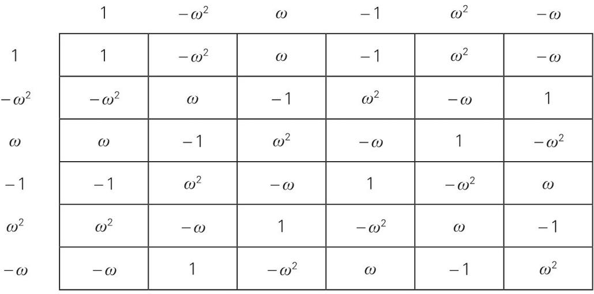
图 10-2 群 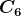
的凯莱表
正如你所料，因为我们在这里做的只是普通的（我的意思是“普通复数的”）乘法，所以这个群是可交换的。这个群的名字是  ，即六元循环群。
，即六元循环群。
这两个群都是包含 6 个元素的群的实例，用术语说，它们都是 6 阶群。是什么让它们成了群？“乘法表”的某些特征对群来说是至关重要的。例如，单位元（第一个群的单位元是  ，第二个群的单位元是 1）在每一行和每一列中刚好各出现一次。
，第二个群的单位元是 1）在每一行和每一列中刚好各出现一次。
上一段话中最重要的一个词就是“实例”。数学家会认为， 和 这两个 6 阶群是完全抽象的对象。如果把 3 个对象的 6 种置换替换为 1、 、
、 、
、 、
、 和
和  ，并且用相应的希腊字母替换凯莱表中的每一个符号，那么这个表就是这个抽象群的一种定义，与置换完全无关。事实上，这正是凯莱在其 1854 年的论文中的做法。3 个对象的置换群是抽象群 的一个实例，就像美国联邦最高法院的九位大法官是抽象数字 9 的一个实例一样。六次单位根的情况也类似，在普通乘法运算中，它们构成了 。你可以用 1、、、、 和 来替换 6 个六次单位根，并对第二个表格也做相应的替换，就得到 的完全抽象的定义，而且与单位根无关。
，并且用相应的希腊字母替换凯莱表中的每一个符号，那么这个表就是这个抽象群的一种定义，与置换完全无关。事实上，这正是凯莱在其 1854 年的论文中的做法。3 个对象的置换群是抽象群 的一个实例，就像美国联邦最高法院的九位大法官是抽象数字 9 的一个实例一样。六次单位根的情况也类似，在普通乘法运算中，它们构成了 。你可以用 1、、、、 和 来替换 6 个六次单位根，并对第二个表格也做相应的替换，就得到 的完全抽象的定义，而且与单位根无关。
这就是凯莱的伟大成就，用这种纯粹抽象的方式展示了群的想法。尽管凯莱的洞察力非凡，而且人们也完全承认他在 1854 年发表的论文中展现出来的概念上的巨大飞跃，但是凯莱还是不能完全把他的研究对象从方程及其根的背景中分离出来。为了回顾这些研究的起源，凯莱在其 1854 年的第一篇论文中的第二页附加了这个脚注：
用于置换或替换的群的思想源于伽罗瓦，我们可以认为，群的引入开创了代数方程理论发展的新时代。
凯莱说得很对。现在我们该回过头重新沿着 19 世纪中期的另一条线索，去看一看代数学历史上唯一具有浪漫主义色彩的英雄人物埃瓦里斯特·伽罗瓦（1811—1832）。
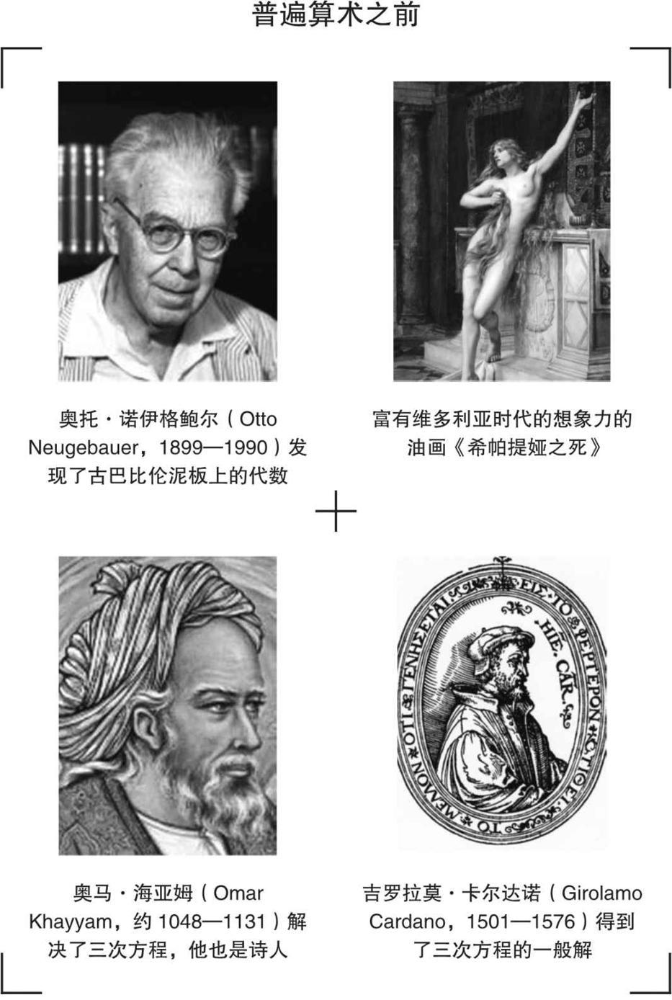
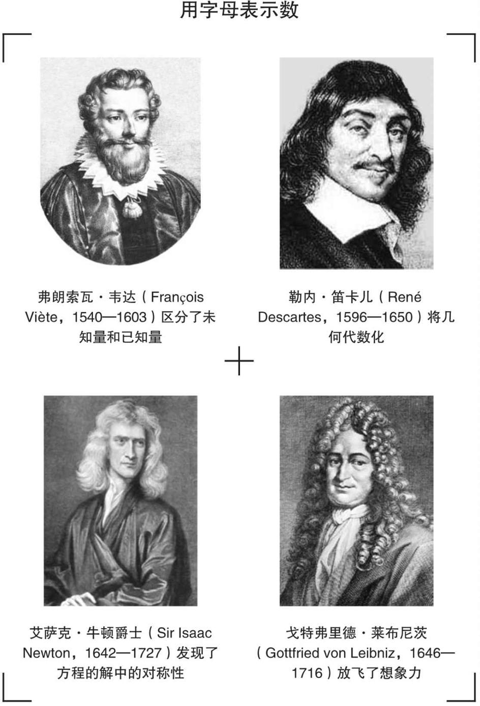
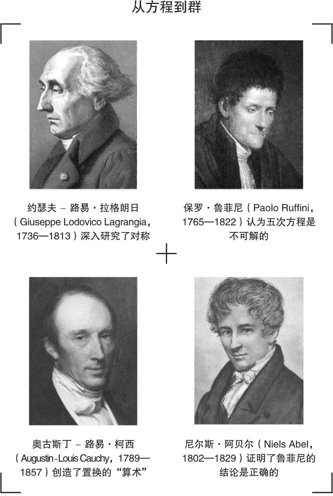
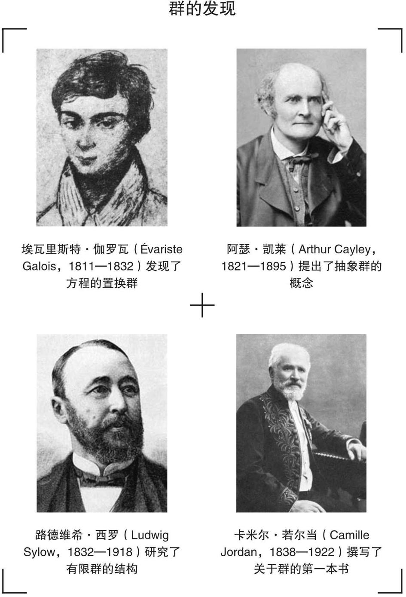
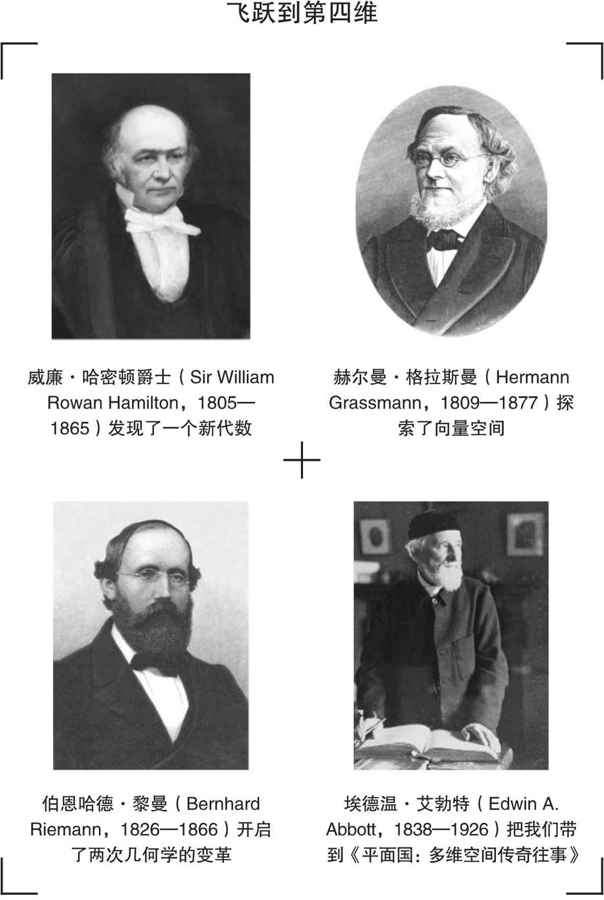
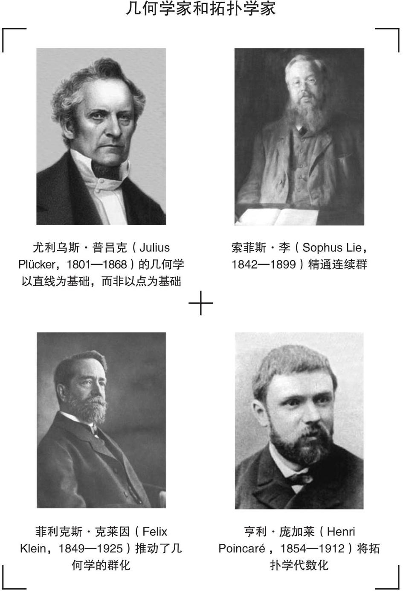
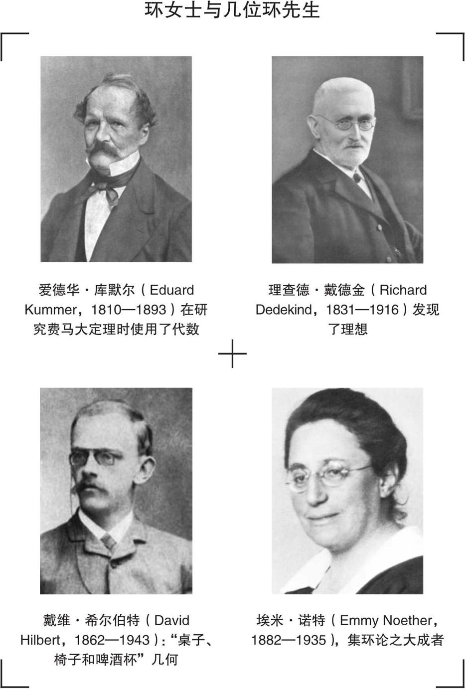
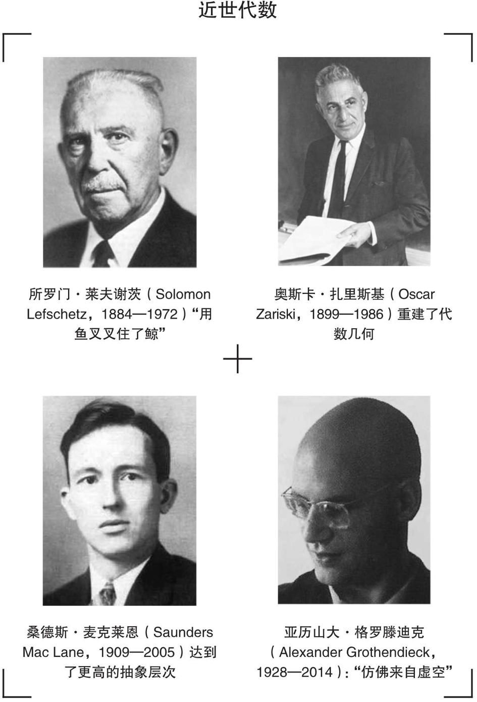